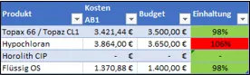
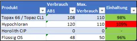
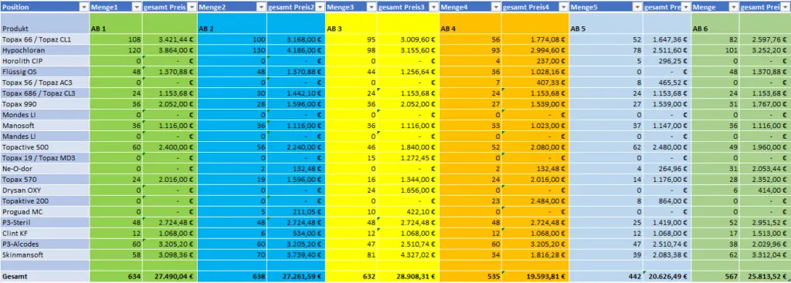
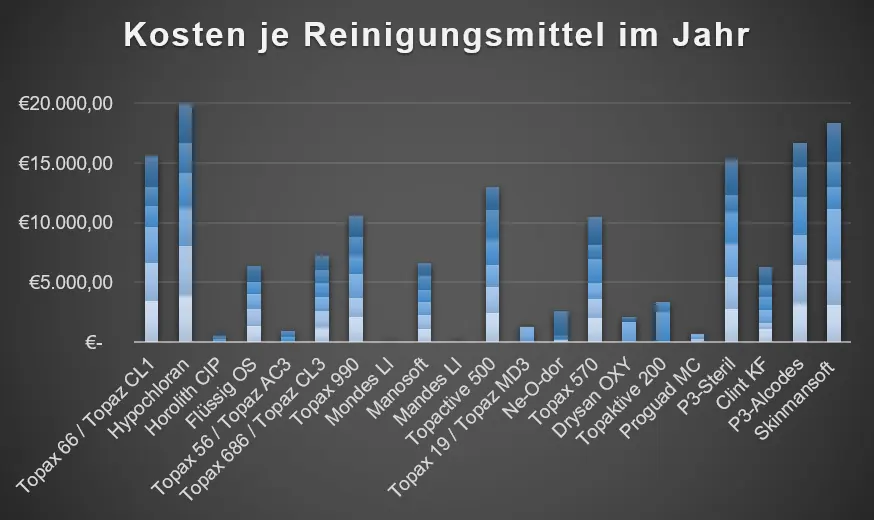
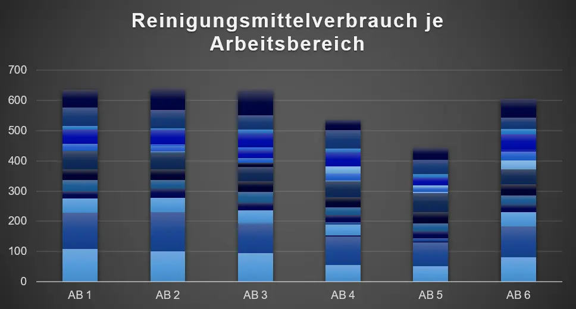

The consumption statistics show whether the planned quantity or budget per supply was adhered to. We can use it to discover if the budget and quantity were planned correctly or if they need to be changed. For a detailed evaluation of the collected data, we set guidelines that must be adhered to. This also includes taking into account possible deviations or determining how high these may be.
We work with a traffic light system in order to be able to present the evaluation to our customers in a clear manner.
Specification:
Is the budget per supply respected?
+/- 5% deviation allowed.

Specification:
Are the quantities respected?
+/- 5% deviation allowed.

We document all supply costs and used quantities each month and use the traffic light system combined with the specification to show how much of wach supply was used and compare the actual costs to the planned costs. If they exceed or undercut the specification too much and are no longer withing the deviation, they are highlighted in red.

The collected data is recorded in statistics and then evaluated.


In order to avoid errors in the evaluation, unscheduled deviations or changes are documented every month. In this way we can rule out that there is an error in the cleaning plan. In conjunction with our other parts and our public documentation, we can locate the source of the problem and work out a solution for you.